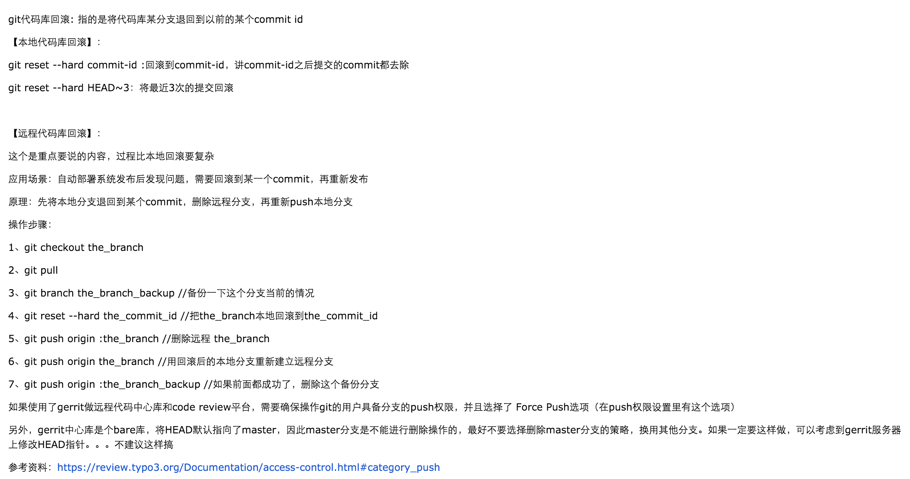

The Git Instructions
modified on Mar 13 2016 1:17AM
About the branch operations:
- using
git branchto check all the branches and your current branch- using
git branch -dto delete the branch that are not needed- using
git checkout -bto create or switch to another branch- using
git branch --set-upstream-to=origin/dev devto set the relation table beween your local branch and your remote branch
About the basic operations:
- using
git pull- using
git push- using
git init- using
remote add- ETC.....
How to rollback:
